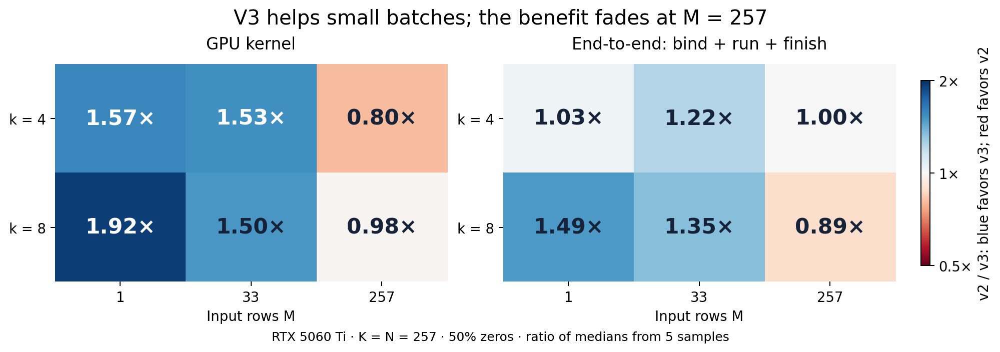
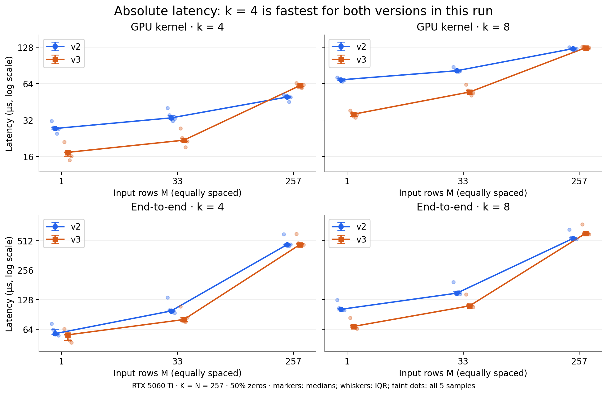
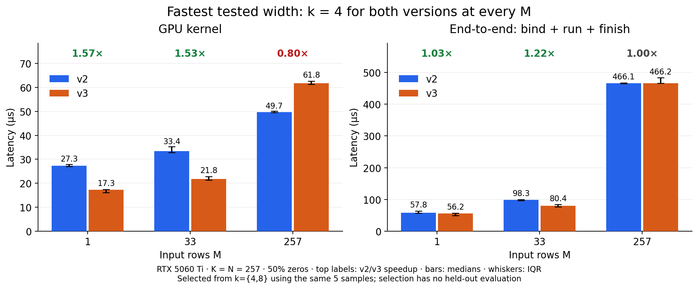

K=N=257 · 50% zeros · five samples · all recorded correctness/sanitizer checks passed.
V3 accelerates small-batch GPU kernels, but the larger-batch and end-to-end results are mixed. See full interpretation and numerical comparison.


